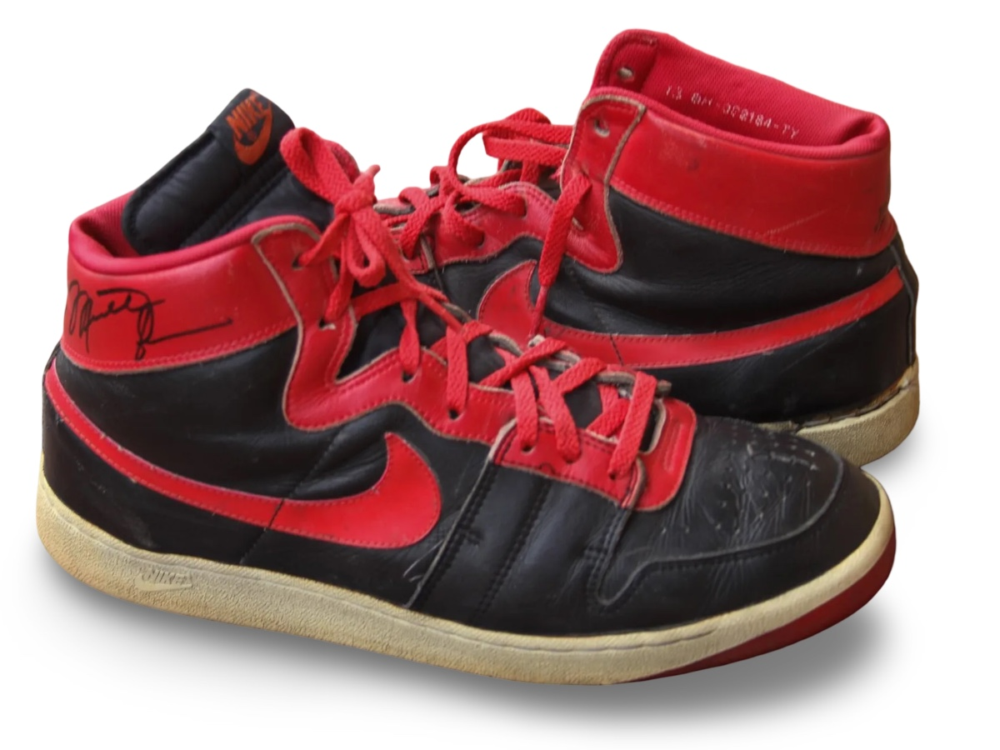
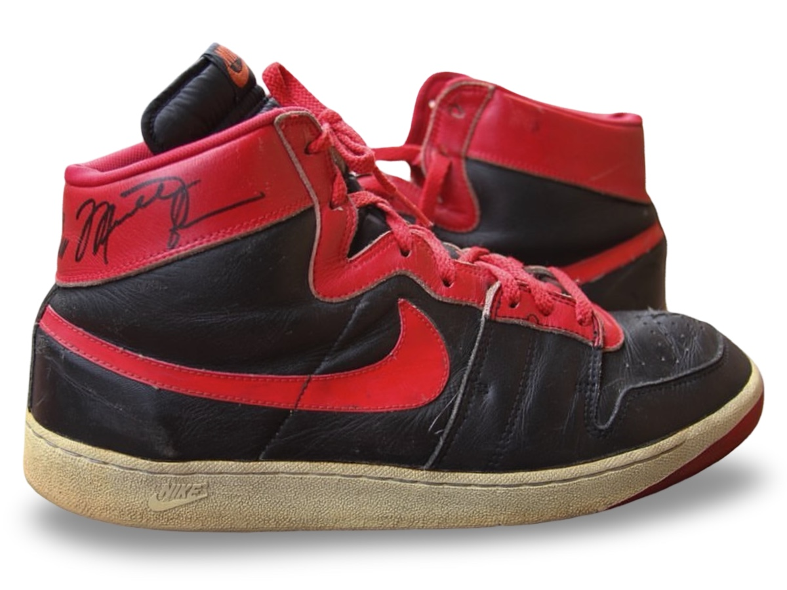

Photo-matched Nike Air Ship sample worn during preseason.
The first documented Nike Air Ship worn by Michael Jordan prior
to the introduction of the Air Jordan 1 and the famous “BANNED”
sneakers.
Photo Match Details
- Photo-Matched: Yes
- Games Photo-Matched: 1
- Photo-Matched By: MJA
Research & Provenance
- First known pair to be worn by Michael Jordan.
- A sample version of the Nike Air Ship featuring “AIR” branding, a Nike Pro Court outsole, and a modified ankle cut to meet requested specifications.
- Internally photo-matched within the archive.